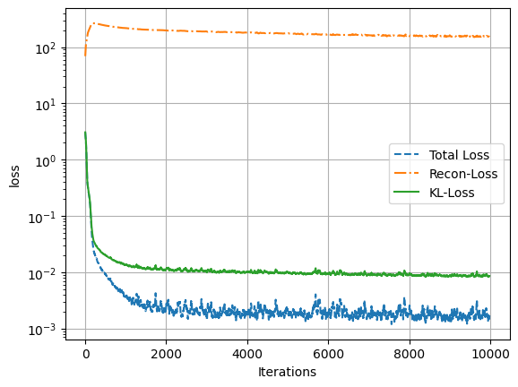
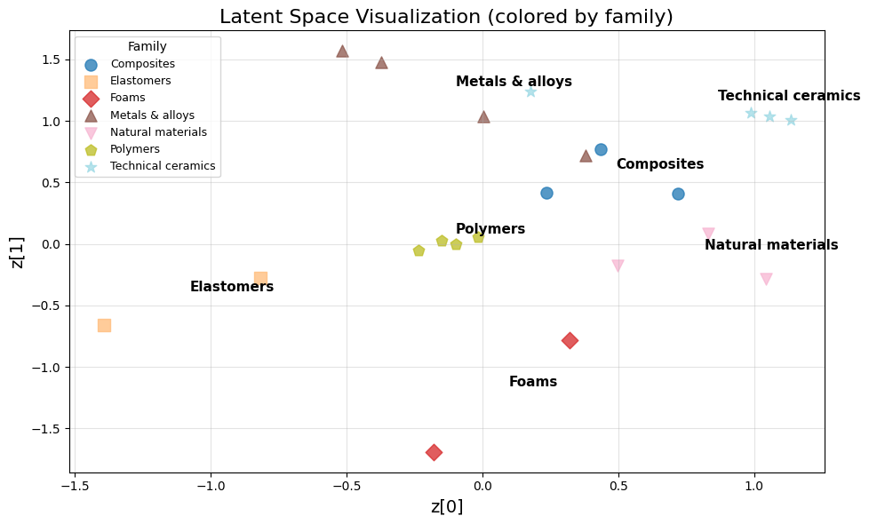
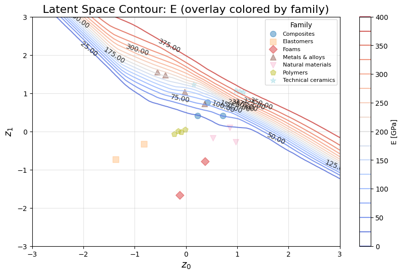
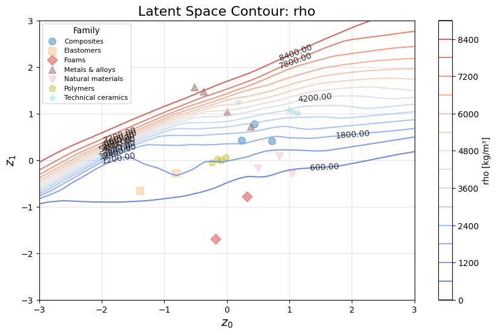
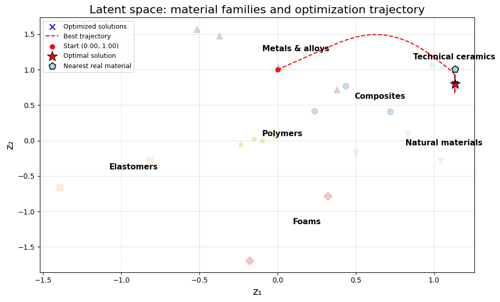
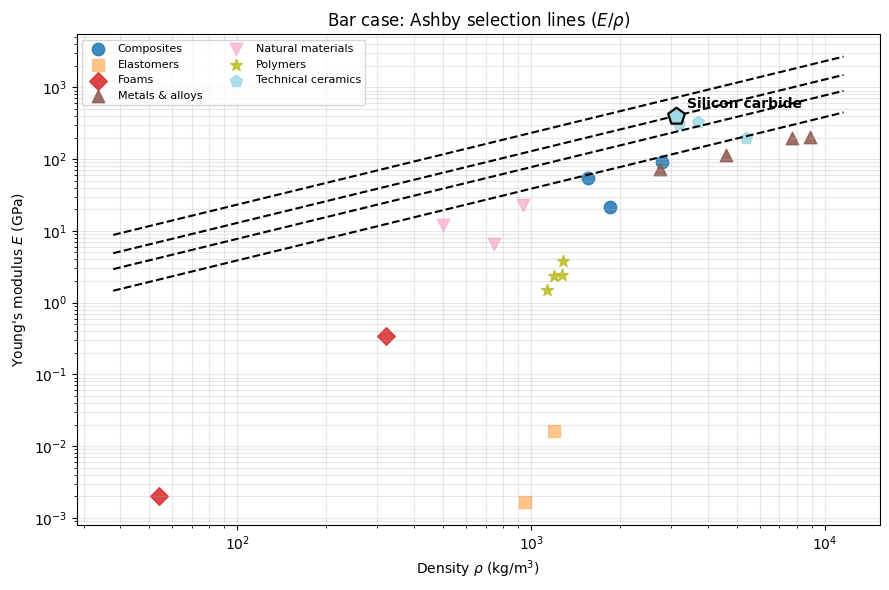
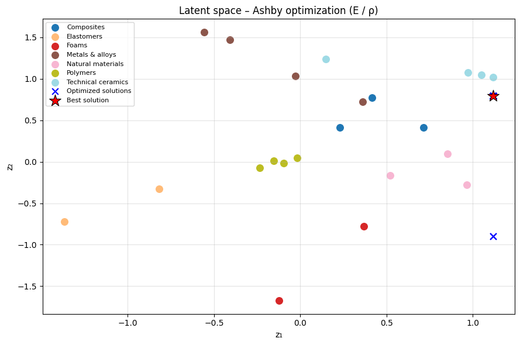
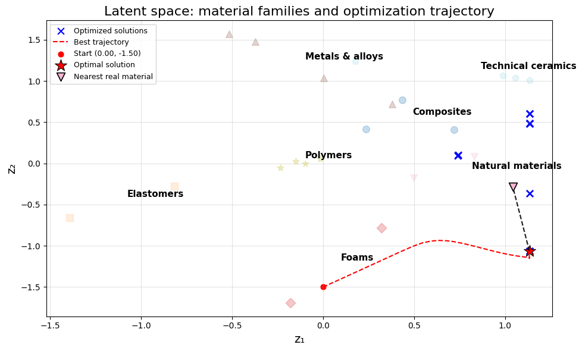
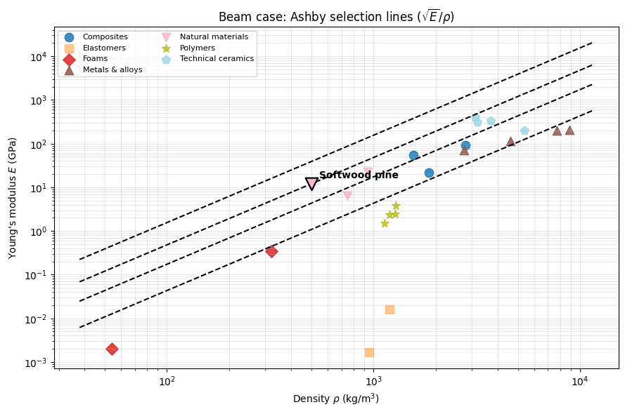
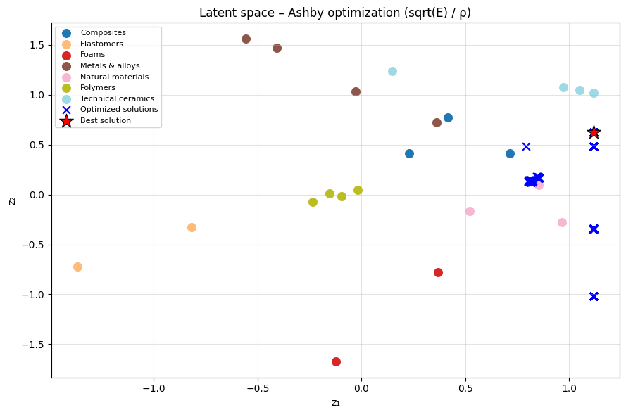

Part 1, “Ashby's Maps,” followed Ashby's method
through a single log–log guideline, a multi-objective value function, and an eco-cost axis —
three generations that all still ask a human to pick the axes, and all still top out at two or three
properties before the picture stops helping. This second part removes that ceiling by training a
variational autoencoder on the same material database and replacing “read a slope
off a chart” with “follow a gradient through a learned, continuous space.” The same
trained network, unchanged, then answers any material index by gradient ascent — validated case by
case against the classical answer, on the two baseline structural cases worked by hand in Part 1 and
on thirteen further cases beyond them.
Part 1 closed on a genuine limit. The classical chart
compresses a mechanics derivation into a slope on two log axes: unbeatable for one index, incapable of
more than two properties at a time. The value function removes that ceiling by folding any number of
objectives into a weighted sum — but past two dimensions, Ashby's own method falls back to a table
and a ranking, no picture involved. A spring that must be
light and strong, a heat exchanger balancing thermal shock against corrosion — every
genuinely multi-property design question runs straight into this wall.
This part asks a different question: instead of exploring the database directly, can a model
learn the material property manifold, and can selection then become continuous optimisation on
that learned space rather than a database search? Concretely: train a variational autoencoder (VAE) to
reconstruct a material database in a low-dimensional latent space z, then find the
performance-maximising material by ordinary gradient ascent on z through the frozen
decoder. The same trained network, unmodified, then answers
any performance index over the properties it was given — only the objective function
changes. This mirrors a broader line of work applying machine learning to eco-friendly material and
structural design, and connects to related generative approaches for
visualising engineering catalogs.
Twenty-two materials spanning seven families — composites, elastomers, foams, metals & alloys,
polymers, natural materials, and technical ceramics — were drawn from the CES/Granta
database, the same 22-material set Part 1 used throughout. Each entry
carries Young's modulus E (GPa) and density \rho (kg/m3);
both span several orders of magnitude and are \log_{10}-transformed and min–max
normalised to [0,1] before training.
The 22-material, 7-family dataset used to train the VAE (values from the CES/Granta database).
The encoder maps the two-dimensional, log-normalised property vector
\mathbf{x}=[\log_{10}E,\,\log_{10}\rho]^\top to a Gaussian posterior over a
two-dimensional latent space; the decoder reconstructs \mathbf{x} from a sampled latent
code \mathbf{z}. Both sub-networks are a single fully-connected hidden layer of 250
neurons with ReLU activations — deliberately small, since the whole point is a smooth manifold, not
a high-capacity model.
VAE architecture: a two-property input, one 250-unit hidden layer on each side, and a
two-dimensional Gaussian latent space in between.
Training minimises the usual evidence lower bound, a reconstruction term plus a KL-divergence
regulariser pulling the posterior toward a standard Gaussian prior:
with \beta=4.5\times10^{-5} — selected by grid search over
\{10^{-6},10^{-5},4.5\times10^{-5},10^{-4}\}: larger values degraded reconstruction
without improving cluster separation, smaller values let the second latent dimension collapse. Training
runs 10,000 Adam iterations at learning rate 2\times10^{-3}.

Training convergence: total, reconstruction, and KL-divergence losses over 10,000 iterations.
Monotonic stabilisation of all three confirms the network has converged.
Reconstruction accuracy, measured by decoding every training material's own latent code and comparing to
its true properties, averages 5.5% relative error on E and 2.8% on \rho
across all 22 materials (worst case 17.4% and 8.4% respectively) — faithful enough recovery that
the learned space can stand in for the database itself in what follows.
Reconstruction error summary, encode–decode round trip over all 22 materials.
No class labels were used during training — the network sees only [\log E,\log\rho]
pairs, never a family name. Even so, the seven families separate into distinct, well-ordered clusters
purely from the mechanical property manifold:

The 22 training materials in latent space, coloured by family after the fact. Clustering
emerges entirely from E and \rho — the network was never told
which material belongs to which family.
What matters for optimisation is not just that materials cluster, but that the space between
them is meaningful. Decoding E and \rho continuously across the full
latent plane — not just at the 22 training points — shows exactly that: smooth, monotonic
fields with no discontinuities, confirming the decoder is a genuinely differentiable map from latent
coordinates to physical properties. This is the property that makes gradient ascent meaningful in the
first place, and it is worth looking at directly rather than taking on faith:

Young's modulus decoded continuously across the latent plane. The colour gradient runs
smoothly from the elastomer/foam corner (bottom-left) to the ceramics corner (top-right), with no
jumps between family clusters.

Density decoded continuously across the same plane. The gradient direction differs from
the E field above — exactly what lets gradient ascent on a ratio like
E/\rho find a genuine interior optimum rather than a degenerate one.
This is the sense in which the VAE “renews” the chart rather than merely reproducing it: a
classical Ashby chart also encodes E(\rho) as a scattered cloud of 22 points, but only
the VAE's decoder defines a value everywhere in between, differentiable at every point —
the prerequisite for the gradient-based search in the next section.
where M is the Ashby performance index, D_\theta the trained (and now
frozen) decoder, and the quadratic term — weighted by \lambda=10^{-3}, using the
empirical mean \mu_i and spread \sigma_i of the training latent codes
— discourages solutions from drifting toward the edge of the data-supported region. After every
step, \mathbf{z} is additionally clamped to the observed range of each latent coordinate,
z_i \leftarrow \min(\max(z_i,z_{\min,i}),z_{\max,i}), so the search can never extrapolate
past what the training data actually supports.
run at \alpha=0.05 for up to 600 iterations, stopping early once
\|\mathbf{z}_{k+1}-\mathbf{z}_k\|<10^{-6}. To avoid depending on the starting point, a
multi-start strategy launches 35 independent runs from a regular Cartesian grid spanning
z_1\in[-1,1] and z_2\in[-1.5,1.5] in increments of 0.5; the reported
optimum is whichever run reaches the lowest final loss. Once optimisation converges, the closest
catalogued material is found by minimum Euclidean distance between the optimal latent code
\mathbf{z}^\star and every training material's own latent code.
Two baseline cases, checked against the exact chart
The framework is validated first on the two cases Part 1, §1.1, worked by hand from mechanics
— the same derivations, now approached by search instead of algebra.
For a minimum-mass bar under axial stiffness constraints, the classical index is
M_{\text{bar}}=E/\rho. Latent-space optimisation converges to
\rho=2{,}704\ \text{kg/m}^3 and E=313\ \text{GPa}, with
Silicon Nitride identified as the nearest real material — landing squarely in the
technical-ceramics corner of the latent space, exactly where Part 1's own tie/beam/panel guideline
table predicts a slope-1 line should end up.

Multi-start optimisation in latent space. The red dashed path traces the best-converging
run from its start to the global optimum (star), in the Technical Ceramics region.

The exact Ashby E–\rho chart, slope-1 guideline
lines for M=E/\rho. The first family the line touches is Technical Ceramics —
Silicon Carbide is nominally highest here, with Silicon Nitride, the VAE's nearest match, immediately
behind it in the same family.

All 35 multi-start runs for the bar case: every initialisation, regardless of where it began,
converges to the same ceramics corner — evidence the optimum is a genuine property of the
learned space, not an artefact of one lucky starting point.3.2
Beam, deflection-limited
For a deflection-limited beam in bending, the index M_{\text{beam}}=\sqrt{E}/\rho
shifts the exponent on density relative to the bar case, and with it the optimum: the search converges to
\rho=77\ \text{kg/m}^3 and E=0.42\ \text{GPa}, with Softwood
Pine identified as the nearest real material.

Multi-start optimisation for the beam case. Trajectories converge to the Natural Materials
region — a visibly different corner of the same latent space than the bar case above.

The exact Ashby chart with slope-2 guideline lines for M=\sqrt{E}/\rho.
The first family the line touches is Natural Materials, with Softwood Pine — the VAE's nearest
match — the standout point.

All 35 multi-start runs for the beam case, converging on the natural-materials corner
instead of the ceramics corner — the geometry-dependent shift in the index alone is enough to
move the optimum, with no change to the network or the search procedure.
The shift from ceramics (bar) to wood (beam) correctly reflects the geometry-dependent logic of Ashby's
theory, and it emerges from the gradient signal alone — the network was never told anything about
bars, beams, or bending. Both cases also agree with the classical chart on the level of individual
families, not just broad regions: the nearest-material lookup in latent space and the first family
touched by the classical guideline line point to the same corner of the database in both cases.
The bar and beam cases above use only E and \rho — exactly what
Part 1's charts could already handle, kept deliberately simple for transparent benchmarking. The same
four-step procedure, unchanged, extends to indices over more properties, which is the entire point of
leaving the chart behind. Extending the property set to include yield strength \sigma_y
and cost C_m, the same pipeline — encode, train,
search, check — runs unmodified on a third representative case, a strength-limited, minimum-mass tie
(M=\sigma_y/\rho):
Training convergence for this case's VAE (20-iteration moving average), checked before every
latent-space search below.Multi-start gradient ascent on log M. Every run drifts toward the same
corner of latent space — the composites cluster — and the nearest real material to the best
solution found is highlighted.The exact Ashby chart for the same index, computed with no VAE involved. CFRP epoxy is the
true optimum — and it is also the material nearest the latent optimum above.
The same code, unchanged, was then run across thirteen further cases drawn from the Ansys/Granta
Performance Indices Booklet — ties, beams, panels,
columns, shafts, flywheels, pressure vessels, springs, and thermal problems:
VAE latent-optimum nearest material vs. the exact-Ashby answer, across thirteen extended cases.
Case
Index
Exact-Ashby winner
VAE match?
Beam, strength-limited
\sigma_y^{2/3}/\rho
CFRP epoxy (composites)
Yes
Column / strut, buckling
\sqrt{E}/\rho
Softwood pine (natural materials)
Yes
Flywheel
\sigma_y/\rho
CFRP epoxy (composites)
Yes
Minimum cost (stiffness)
E/(\rho C_m)
Softwood pine (natural materials)
Yes
Minimum cost (strength)
\sqrt{E}/(\rho C_m)
Softwood pine (natural materials)
Yes
Panel, stiffness-limited
E^{1/3}/\rho
Softwood pine (natural materials)
Yes
Panel, strength-limited
\sigma_y^{1/2}/\rho
CFRP epoxy (composites)
Yes
Pressure vessel, yield
\sigma_y/\rho
CFRP epoxy (composites)
Yes
Shaft, torsional stiffness
\sqrt{G}/\rho
Softwood pine (natural materials)
Yes
Shaft, torsional strength
\tau_y^{2/3}/\rho
CFRP epoxy (composites)
Yes
Spring, min. volume
\sigma_y^2/E
Natural rubber (elastomers)
Yes
Spring, min. mass
\sigma_y^2/(\rho E)
Natural rubber (elastomers)
Yes
Thermal distortion
k/\alpha
Silicon carbide (ceramics)
Yes
Thermal shock
\sigma_y/(E\alpha)
Natural rubber (elastomers)
NoSee below — this is the one genuine failure in the table, discussed rather than hidden.
Thermal shock (with conductivity)
\sigma_y k/(E\alpha)
Al/SiC composite (composites)
No
Tie, strength-limited
\sigma_y/\rho
CFRP epoxy (composites)
Yes
Eleven of thirteen extended cases — and both baseline bar/beam cases above — land the latent
optimum on the exact-Ashby family, with no case-specific tuning beyond the property subset and the index
formula itself. One case is worth dwelling on because it recovers a genuinely surprising, textbook result
rather than an obvious one: the spring index \sigma_y^2/E is maximised,
in this material set, by natural rubber — not steel, as the hero figure at the top
of this article shows.
That caveat is the point: \sigma_y^2/E is derived assuming failure by yield, and is only
a sensible design criterion within a material class for which yielding — not creep, not fatigue,
not an operating-temperature limit — is actually the constraint that matters. The index is not
wrong; it is being asked a narrower question than “what should I build my valve spring from?”
This is exactly the discipline Ashby charts have always demanded of their user, restated for a network
that has no notion of “spring steel” unless it is told to look only among metals.
The one genuine failure in the table is instructive rather than embarrassing. Thermal shock
resistance mixes four properties (E,\sigma_y,\alpha,k) drawn from only 22
training materials — the most data-starved case in this study. An early version of every
multi-property case (spring, minimum-cost, thermal shock) used a fixed 2-dimensional latent space
regardless of how many properties were involved; this under-constrained the decoder and let the
optimiser exploit extrapolation artefacts — decoded property combinations, such as a material
simultaneously as light as a foam and as stiff as a metal, that correspond to no real material. Setting
the latent dimension equal to the property count fixed this for the 3-property cases (spring,
minimum-cost). The 4-property thermal-shock case remains the exception: the decoder can still extrapolate
away from the real-material manifold in the region the optimiser is free to explore, so its
nearest-material lookup does not reliably reproduce the exact ranking — even though gradient ascent
still correctly improves the decoded index at every step. This is a sample-efficiency limit, not a
failure of the optimisation itself, and it is exactly why every case in this study prints both
the VAE result and the closed-form Ashby ranking side by side, rather than trusting the shortcut
alone.
Line the two parts of this note up against the plain 1990s Ashby chart, and a single lineage appears,
each generation answering a limit of the one before it.
Four generations of the same idea, each answering a limit of the one before it.
The chart compresses a mechanics derivation into a slope on two log axes —
unbeatable for one index, incapable of more than two properties at a time. The value
function removes that ceiling by folding any number of objectives into one weighted sum, at the
cost of the picture: past two dimensions, Ashby's own method falls back to a table and a ranking.
The eco-Ashby chart does not change the mathematics at all — it changes what one
of the axes is allowed to mean, substituting a rigorously defined environmental prevention cost
for price, and in doing so turns “which material is best?” into “best for whom, and at
what true cost?” without asking the designer to learn a new method.
The VAE is where the ceiling actually lifts. A value function still needs a human to
supply exchange constants and, for more than two objectives, gives up the chart's visual logic entirely;
a latent space needs neither. Gradient ascent through a trained decoder handles two properties or six
with the same code, the same architecture, the same four steps — the tangent-line construction of
Part 1 and the multi-start search of §2.4 above are, underneath, the same act of sliding
something across a surface until it stops improving. And because eco-cost is, mechanically, just another
decoded property, the minimum-cost case in §4 already shows the natural next experiment: fold Idemat
eco-cost data into the same latent space this article trains on price and mechanics, and the eco-Ashby
chart of Part 1 becomes one more index an already-trained network answers by gradient ascent —
no new chart, no new axes, no ceiling at two.
Ashby's real contribution was never the two axes. It was insisting that “best material” is
always the answer to a specific, statable question — this function, this constraint, this exchange
constant — never a property of the material alone. A learned latent space does not retire that
discipline; it is what lets the question finally be asked with as many variables as the engineering
actually has, then searched instead of read off a slope — a map redrawn for as many dimensions as
the problem needs, not the two a sheet of paper allows.
Contributions
Joseph Morlier (ISAE-SUPAERO) posed the extension, supervised the study, and supplied the extended
13-case notebooks. Almudena Cobo-Urios and Álvaro Silva-Vilela-Caridade (ISAE-SUPAERO) developed the
variational-autoencoder methodology, dataset preparation, and latent-space optimisation validated here on
the bar and beam cases (§3), including the reconstruction-accuracy analysis and the continuous
latent-field figures in §2.3. The narrative synthesis in this article, and its connection back to
Part 1, were drafted with Claude.
Data & code
The bar/beam validation figures reproduce results from the authors' own VAE training and optimisation
runs on the CES/Granta dataset. The extended 13-case table and its
supporting figures are reproduced from the Ashby-VAE case-study notebooks.
Related generative-design work on catalog selection: .
Limitations
The thermal-shock case (§4.1) is the one extended case where the VAE's nearest-material lookup does
not reliably match the closed-form Ashby ranking, for the data-availability reasons discussed there. All
thirteen extended cases and the two baseline cases print the VAE result and the exact Ashby ranking side
by side, rather than reporting the VAE result alone. The bar/beam reconstruction errors (§2.2,
5.5%/2.8% mean) are computed on the same 22 materials used for training, not on a held-out set; the
dataset's small size (22 materials) makes a genuine train/test split of limited statistical value, and
this is flagged rather than glossed over.
About this series
This is Part 2 of a two-part note. Part 1, “Ashby's
Maps,” covers the classical method this article builds on: the log–log guideline, the
multi-objective value function, and the eco-cost extension.